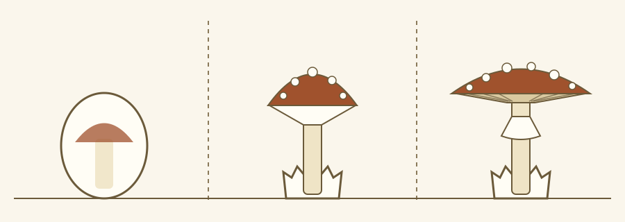

Mycology · quick reference
Mushroom anatomy
From Lesson 6.
Build and growth
All tissue is tightly interwoven hyphae. Primordium (pin, <2 mm) → button (egg-like) → rapid expansion, mostly by inflating existing cells with water drawn from the mycelium. Forming primordia takes days.
Parts
Cap (cappello): carries the spore surface underneath.
Stem / stipe (gambo): sterile; lifts the cap into wind or onto animals. Off-centre or absent in oysters, brackets, puffballs.
Universal veil: wraps the whole button → volva (cup at base) + warts on cap.
Partial veil: cap edge to stem, over the gills → ring / annulus (anello), or cortina (cobweb) in Cortinarius.
Many mushrooms have no veils. Veils are anatomy, not an edibility test: deadly death caps are Amanita, which have both.

Spore surface
Hymenophore: the spore-bearing structure. Hymenium: the layer of spore-making cells (basidia) covering it.
Gills (lamelle) · Pores (pori), tube openings, in boletes and polypores · Teeth, spines, as in the hedgehog mushroom (steccherino) · also folds or smooth.
All maximise surface per mass → more spores. Gills evolved separately in unrelated fungi (convergent evolution).

Sources
Wikipedia: Mushroom · Stipe · Lamella · Hymenophore · Universal veil · Partial veil · Bolete